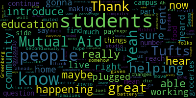

[Callahan]: But I hope that you two will introduce Tufts Mutual Aid and introduce yourselves. And somehow my computer is not plugged in, like it's plugged into my ear and my battery is gonna die. So I'm gonna duck out for just one second in this COVID home studio here. But why don't you go ahead and introduce Tufts Mutual Aid and yourself. I have you live now. but I think you're muted. Ah, great, Nikhil, great.
[SPEAKER_00]: Yeah, sure. So Madeline and I are part of the many, many organizers and members of Tufts Mutual Aid. So we're essentially a collective of people who are coming together, well, kind of banded together really quickly after Tufts announced, just like many other universities, it's shut down and like cessation of live classes and other activities and a transition to virtual learning and that meant that people had to move off campus essentially across the country, across the world for like more than five days. So Mutual has been specifically has been focused on making sure that the students who are most in need of resources get the resources that they need. So essentially we're a facilitator. Yeah. Would you like to add anything to that, Madeline?
[SPEAKER_01]: Yeah, I mean, I think you covered it really well. Yeah, and yeah, I think that about covers it, the basics.
[Callahan]: So can you tell us some of the stories that you've heard as you've been working with the folks that you're working with? What do you hear from people? what's happening in their lives, right, as a result of these changes?
[SPEAKER_00]: So, I mean, I think there's just such a huge variety in the circumstances that students are in, and I'll just probably start chronologically from the need to really find the resources to move off campus, essentially. That was the first challenge, I think. A lot of monetary resources for travel, finding a place to stay, so housing, and also finding food and other resources that you need for literally just packing and all these things that just come up. unexpectedly because this is like by definition a very unexpected situation. So after that we've obviously as an educational institution had to deal with as students and also as professors and instructors and just members of the Tufts community had to deal with this new virtual mode of learning. And of course, the experiences that we had in person didn't directly translate to a virtual environment. So many people are in either in homes that do not really support their academic success. So that could be because for a range of reasons, we've heard people with unwell parents or other relatives and people that they're living with in very small cramped spaces or in not emotionally just unsustainable and unhealthy environments as well at home and having added responsibilities. So there are a lot of like academic and policy and systemic changes that had to come about not only in terms of tangible resources but also in terms of the wide variety of situations that students found themselves in and like really making sure that their voices were heard by the administration and allowing them a platform to like voice those changes, voice their concerns and their needs and really get those needs met. and change the expectations that we have as well.
[Callahan]: We have a question from Joel Greenberg. He says, how much notice were people given to move off campus? Seems like a huge burden for students and families.
[SPEAKER_01]: Yeah, it was about like, I think it was like five days, just about. I think we got the, or maybe six, we got the note, like an email notification on March 10th that we would have to leave campus and everyone had to be gone by the following Monday. And so it was like the five, six days in between there were just a madhouse. Like you could just feel like the panic and the grief in the air. And both of us are seniors. And so there was just the added layer of This time is supposed to be our last, the last couple months, getting to have some closure. And so having to rush all of that was definitely difficult. And about the, a lot of tough students live off campus anyways. Most juniors and seniors live in off-campus houses. And so there are a lot of folks who have stuck around. But obviously, it's very different since we can't be seeing each other anymore. Yeah.
[Callahan]: Yeah. And would you say, I mean, obviously you don't know numbers, but maybe you do, like what percentage of tough students actually had to leave town, like had to find, like were on campus and had to find somewhere else and ended up maybe going home?
[SPEAKER_01]: I don't know, do you know any numbers off the top of your head?
[SPEAKER_00]: I feel like it should, it has to be above half the student body, definitely. It has to be at least 60 to 70 percent of students because students who left campus are either juniors or seniors because you have to stay on campus for the first two years, so that's already half the population of Tufts. And then there's obviously seniors like me who did live on campus or juniors, whatever year you are, even graduate students who had to just leave. So honestly, it's definitely in the thousands. If you include graduate students as well, it's definitely in like about four or five, easily 5,000 or more. So yeah, it's just massive. like move out of students. And that's just, that's a tough as a medium-sized school. There are obviously, you know, state schools across the country and, you know, other places that have to, that essentially are moving literally millions of students across the country and the world. So lots.
[Callahan]: Yeah. And so, you know, it's interesting because when I, when I first heard of Tufts Mutual Aid, I thought, okay, it's like, you know, the other mutual aid societies helping provide you know, helping people make sure they're safe, that they can pay their rent, that they can get groceries and things, but it sounds like you are also pretty deeply involved in making sure that students who have to now continue their education are able to do that part of it. So, like, how do you balance those or, you know, You know, what do you feel has been happening for students who have to continue their education, have to do everything online? Like, how disruptive has that been to their education? Maybe talk about that side, just the educational aspect of it.
[SPEAKER_00]: Yeah so I will probably speak a little bit about this just because I've had the privilege to be involved with a group of students. We honestly are working collectively together on pretty much everything in mutual aid which is one of the most beautiful things about it. I honestly have not seen a more like restorative and like inspiring thing movement happen in a long while, if not since I've come to Tufts. But honestly like it's really great to see people kind of pouring their energies into what they're passionate about. So a bunch of us kind of worked on these systemic changes that we wanted the administration to make and liaised with the senate where that already has existing relationships with the admin. So we actually like made a course guidelines proposal that initially wasn't pulled from the student body It wasn't exactly, you know, voicing every single concern that the students had, but it was taken from the surveys that we sent out with the general concerns. And then also later what we did is sent out another survey asking what people needed. So in the beginning there were a bunch of surveys. So that's how we kind of gathered information. And within this like course changes or guidelines proposal to the, essentially the like, higher ups, like the deans of engineering, the school of engineering arts and sciences, we identified like some core issues. So we requested that attendance requirements and synchronous learning were not required. So that doesn't, that means you should be able to access and view all course material, including discussions and provided some suggestions of how to conduct discussions asynchronously with multimodal engagement. And that's something that I think should be a feature of education in general. I mean like I can talk forever about pedagogy so this is very much my area of interest and I feel I have a lot of strong feelings about it. But in this situation I think it was most important to make sure that students could do what they needed to do and take care of themselves and their lives and their home lives which has so much variety without conforming to rigid standards set by the existing academic system that we have in higher education here in America. So, which itself is comparatively sometimes, depending on like what other educational systems you're comparing to, could be a lot more relaxed and liberal, but that's only when I think people in power allow students, allow faculty, allow everyone else to feel comfortable to make their own decisions and choices and feel like they actually have an option. So that was one big thing we advocated for, making things available online, the option of alternative assessments and really sending out a statement to urge all faculty, which got sent out to all faculty, to urge them to switch away from traditional exams because the level playing field, which in my opinion does not even exist, because there's so many systemic barriers and so many uneven turfs that we navigate just in our, like, multiple identities every single moment. So that supposed playing field, level playing field, would not exist if you are taking an exam from varied environments and not like all in the same room. At least that was an argument we could easily make. So we kind of targeted what we collectively knew that the administration would respond to combined with what we felt the student body would most need. So essentially, yeah, that kind of summarizes and also like having exam policies that allow students to take exams unproctored. And in terms of like the efficacy of it, a lot of this did not actually amount to, because as we know, policy change takes quite a long time. And especially when the administration and others are dealing with so many unexpected factors of this pandemic, they weren't really making the systemic or like policy level changes. I don't think they would have, might have been, I'm not sure whether they would have been able to, but it's something that we definitely are urging for the future so that students have a more equitable educational experience, but essentially just making sure that the word gets out so that then faculty who do have a lot of breadth of choice in terms of like what they require for their courses make a decision that works for them and for the students because they're also facing additional responsibilities a lot of the time.
[Callahan]: Yeah, yeah. So just a last question about the other side. So the making sure people can get groceries, they can pay for their rent, all of these things. Have you seen, for the students that remain, are you interfacing at all with mamas, with another different mutual aid? Is this mostly students helping students? How are you able to help those students who are in the area to be able to sort of afford the changing circumstances that are happening to them now, but specifically like rent, food, the basics?
[SPEAKER_01]: Yeah, so we have an on-campus food pantry that got started in the wake of campus closing, and we were able to secure like an on-campus space in our campus center. And with all the students moving out, we were able to collect an enormous amount of food from students leaving and convert that to food to supply a pantry and then have been restocking it with support from Tufts Dining Services and very generous donations from the Graduate Student Council and a couple other sources. The pantry has been getting an enormous amount of use. It's open Monday through Friday. And every time that I go, a couple students will pass through. And every time I go, we will have needed to restock it already. And so we aren't collecting any kind of hard data on how much food is flowing through it or how many students are using it, just for privacy reasons and just the capacity. or lack thereof, of being able to keep track of those kind of numbers. But just anecdotally, it's been getting a lot of use. And it's super heartening to know that we're able to help fill a gap in people having access to food. And whether that's just because they're nervous to go to a grocery store or can't afford it, just being able to support the Tufts community in that way has been super heartening to be a part of that. And we're hoping that the pantry will be able to stay open at least until the end of the school year, if not for the summer as well, and hopefully lays the groundwork for something more long-term. But it's been like a good, a helpful stopgap measure in the meantime. And there's, yeah, so it's been getting a lot of use.
[Callahan]: Yeah.
[SPEAKER_01]: What do you see as the long-term? It's hard to know at this point, because there's still so much uncertainty as to whether students will even get to return to campus in the fall. I feel like every day I'm reading some kind of article that talks about one side or the other. And so I think it's impossible to know at this point. like what the fall will look like. And it's tricky because like both of us are seniors and so it won't affect us directly. But it's, I know I have a lot of friends who are juniors and just the uncertainty of knowing if they'll get to come back for their senior year is heartbreaking and yeah, really scary.
[Callahan]: Yeah, absolutely. All right, how can, what can people do? I mean, does it like, like it really has been, the Tufts Mutual Aid is the students helping the students, students who have moved, leaving food, and the graduate students helping in the, you know, so are there ways that other people in the community can be helpful, and what would that be?
[SPEAKER_00]: Yeah, so there, I mean, several ways, I think. So first of all I think when Madeline talked about the food pantry earlier that has been one of like our core like very grounding efforts that you know she and so many other people have put such an amazing amount of effort into and there's really paid dividends um like that has been really useful even for me personally um I can definitely speak to that. So that is something we'd love to love to see continue. I think, Madeline, you could probably say more about how we might want to continue that or solicit donations for the pantry, if possible, especially to rescue food. I think, yeah, Madeline's like one of the coordinators for food rescue at Tufts. So, yeah, so that's something that we'd love to continue, right?
[SPEAKER_01]: Yeah. Yes, definitely. I think, like I said, it just always seems like we're running out of food in the pantry. We're connected with some local non-profits that have been really supportive in helping us access food, but any other resources are just like, whether that's actual food or or just advice on how to run a food pantry. It's been super helpful for us since we're students and there are staff members that have been really helpful in getting it started. It's an incredibly collaborative process.
[Callahan]: And how can people reach you? Is there a website? Is there an email address people can reach out to, a phone number, anything?
[SPEAKER_01]: Yeah, I think we have a Facebook page for Tufts Mutual Aid that is checked on by several volunteers daily, and it's Tufts Mutual Aid Facebook. I don't know if there's anything else.
[SPEAKER_00]: Yeah, so the Facebook page is actually the main point of contact, TUFTS, Mutual Aid. And essentially, for people who are not on Facebook, we do have a website that is also linked in the face. I believe even without an account, you would be able to access the website. But our main point of contact is really the Facebook page. And you can ask for and offer help. by messaging us or just taking a look at all the posts that we have about the pantry about other efforts especially like if you are a student to share your experiences doesn't matter where you are coming from or if you go here like one dream of ours is to really expand this keep this going not only for Tufts, but also outside of Tufts. So we definitely want it to be a continued effort, certainly within our institutional community, but also outside of it. So now that I think the semester is over, we really want to kind of branch out into better interfacing with mamas, That's something I personally definitely wanted to do and like talking to other non-profits, seeing how we can help because also there is a bunch of us who like really who whose summer plans have been you know either changed or you know ruined. So yeah a lot of most students or would not be able to go to their in-person internships if they have any, or jobs or whatever they plan to do. So students who are in the area and are willing and able virtually, we'd love to help out and to, you know, fulfill your mission and also like make sure that we can make this a sustainable effort and always open to new ideas. So I think that will definitely pick up in the next week or so. So that would be a great time to reach out and just kind of liaise with us and kind of just like figure out how we can not only get through this situation, but like life in general a lot more equitably than before.
[Callahan]: Great. Thank you. Thank you so much. Thanks both of you for coming on. It's really great to hear about, you know, this part of our community that we probably don't hear a lot about, you know, outside of the Tufts community. Really great work you're doing. Thank you for doing it. And thanks for being on.
|
total time: 3.7 minutes total words: 563  |
|||
{kind=link}